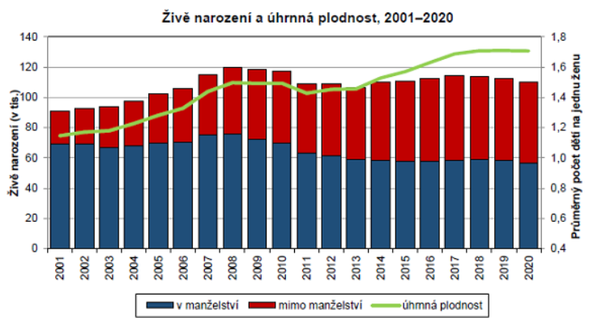

Na záložkách níže najdete úkoly k procvičování látky z jednotlivých lekcí. Ke každému zadání je pro kontrolu k dispozici řešení. Silně doporučuji: Pokuste se problém nejprve vždy vyřešit sami. Mnohem víc si odnesete, než když si jen líně přečtete řešení ;-)
Otázka 1
Najděte, jaký je rozdíl mezi porodností (resp. hrubou mírou porodnosti) a plodností (resp. úhrnnou plodností)? V čem se liší z hlediska vhodnosti použití?
Otázka 2
Za zjednodušeného předpokladu, že je v ČR 10 miliónů obyvatel a ročně se narodí 100 tisíc dětí, jaká je u nás hrubá míra porodnosti?
## [1] 10
Otázka 3
Dohledejte, jaká je aktuálně v Česku úhrnná plodnost. Dále zjistěte, jestli se zaposledních 20 let (zhruba mezi roky 2000 a 2020) zvýšila, snížila, nebo zůstala víceméně stejná.
Za posledních 20 let se naše úhrnná plodnost zvyšuje. Zatímco kolem roku 2000 patřila k nejnižším na světě, dnešní hodnoty kolem 1,7 z nás dělají v rámci rozvinutých zemích spíše nadprůměrnou zemi. Samozřejmě na obnovu populace to samo o sobě nestačí, na to jsou potřeby hodnoty kolem 2,1. Před úbytkem populace nás (zatím) chrání prodlužující se délka života a narůstající migrace.

Zdroj ČSÚ.
Otázka 4
Čína dnes vykazuje velmi nízkou míru plodnosti (daleko za Českou republikou). Navíc víme, že politika jednoho dítěte, která byla v minulosti realizována v Číně, vedla k tomu, že je dnes v kohortě mladých lidí v reprodukčním věku nebývalá převaha mužů. (Je to důsledkem toho, že rodiny nucené mít jen jedno dítě preferovaly chlapce do té míry, že to vedlo k selektivním potratům na základě pohlaví.) Jak bychom tuto doplňkou informaci vyhodnotili vzhledem k nízké míře plodnosti v zemi? Souhlasíte tvrzením, že nízká míra plodnosti v Číně může být do určité míry pouze zdánlivá a vyplývat z výše popsaných důsledků politiky jednoho dítěte? Proč ano/ne?
Je to přesně naopak. Skutečnost, že je v současné kohortě mladých tak málo žen, vlastně znamená, že nízká míra plodnosti ani plně neodráží závažnost demografické situace v Číne.
Otázka 1
Pro každou z následujících proměnných rozhodněte, zda jde o proměnnou nominální, ordinální, nebo kardinální. Pokud jde o proměnnou kardinální, rozhodněte také, jestli je intervalová, nebo poměrová a do třetice, jestli je spojitá, nebo diskrétní.
Otázka 2
Sebevražda je od dob Émila Durkheima považována za relevantní sociologické téma. Jedno pohlaví páchá sebevraždu výrazně (asi čtyřikrát až pětkrát) častěji než druhé (označujme ho po zbytek úlohy pohlaví A). Tipněte si (bez googlování), které to je. Jaké sociologické důvody by s tím mohly být spojeny? Poté odpovězte následující otázky (čísla přibližně platí pro ČR posledních let):
“Relativní riziko sebevraždy je u pohlaví A o XXa % větší než u pohlaví B. Pokud víme, že v každém roce spáchá sebevraždu asi 24 jedinců pohlaví A na 100 000 obyvatel, můžeme dopočítat, že ročně spáchá sebevraždu asi XXb jedinců pohlaví B na 100 000 obyvatel. Rozdíl v absolutním riziku spáchání sebevraždy je tedy mezi oběma pohlavímí XXc %. Šanci na spáchání sebevraždy u jedince pohlaví A, pokud nemáme žádné další informace, lze vyjádřit zlomkem XXd. [Nadstavba, nemusíte umět:] Poměr šancí spáchání sebevraždy mezi pohlavím A a pohlavím B pak lze vyjádřit číslem XXe.”
Pohlaví A jsou muži. To, že muži páchají sebevraždu výrazně více než ženy, je skutečností napříč společnostmi. Protože se tématem nezabývám, důvody neznám, takže váš brainstorming klidně mohl vygenerovat lepší nápady než můj. Já vycházím z toho, že za komunismu u nás muži páchali sebevraždu jen asi 2krát až 3krát častěji než ženy, zatímco dnes je to 4krát až 5krát častěji (počty sebevražd mezi ženymi poklesly od 70. a 80. let na méně než polovinu, zatímco počty sebevražd mezi muži klesly jen o přibližně 25 %). Proto si myslím, že to do nějaké míry může souviset s tím, že současné uspořádání s důrazem na soutěživost může negaitvněji dopadat na muže, kteří neuspějí, než na ženy. Další hypotéza je, že by to mohlo souviset se hustotou a kvalitou sociálních služeb - azylové domy a podobné instituce jsou často jen pro ženy, obdobné instituce pro muže jsou řidší. Ale jak říkám, je to jen brainstorming.
A teď už k číslům:
V textu s vysvětlením:
“Relativní riziko sebevraždy je u pohlaví A o 300 % větší než u pohlaví B (pozor, pokud je relativní riziko 4krát větší, znamená to, že je o 300 % větší, analogicky jako 1,5krát větší riziko představuje o 50 % větší riziko). Pokud víme, že v každém roce spáchá sebevraždu asi 24 jedinců pohlaví A na 100 000 obyvatel, můžeme dopočítat, že ročně spáchá sebevraždu asi 6 jedinců pohlaví B na 100 000 obyvatel. Rozdíl v absolutním riziku spáchání sebevraždy je tedy mezi oběma pohlavímí 0,018 % (tedy necelé 2 desetiny promile - zde se opět dotýkáme toho, že velký rozdíl v relativním riziku nemusí znamenat velký rozdíl v absolutním riziku, pokud je celkové riziko malé, výpočet je následující: Absolutní riziko u mužů v procentech = (24/100000) \(\times\) 100). Absolutní riziko u žen = (6/100000) \(\times\) 100). Z obou výsledků pak už jen spočítáme rozdíl = 0,024 - 0,006. Šanci na spáchání sebevraždy u jedince pohlaví A, pokud nemáme žádné další informace, lze vyjádřit zlomkem 24/99976. [Nadstavba, nemusíte umět:] Poměr šancí spáchání sebevraždy mezi pohlavím A a pohlavím B pak lze vyjádřit číslem 4 (výpočet: (24/99976)/(6/99994)).”
Otázka 1
Každý z následujících výroků dokončete/doplňte správnou z nabízených možností:
Správné odpovědi jsou: b, c, c, c
Zdůvodnění:
Otázka 2
Za použití libovolného softwaru nebo papíru vypočítejte průměrný věk naděje na dožití kombinované populace v následujících zemích podle zadaných čísel (vážený průměr). Která země do výsledku “promluví” největší vahou?
| country | life_exp | population |
|---|---|---|
| Iceland | 82.4 | 348450 |
| Norway | 82.5 | 5295619 |
| Switzerland | 83.3 | 8484130 |
| Montenegro | 76.8 | 622359 |
| North Macedonia | 75.9 | 2075301 |
| Albania | 76.4 | 2870324 |
| Serbia | 76.3 | 7001444 |
| Turkey | 76.4 | 80810525 |
Protože nám nejde o průměr z ukazelů jednotlivých zemí, ale o průměr ze všech jednotlivců v těchto zemích, musíme použít vážený průměr, abychom zohlednili různou velikost populace v jednotlivých zemích. Největší vahou do výsledku promluví největší země, tedy Turecko.
data$life_exp * data$population # nejprve roznásobíme jednotlivé naděje na dožití jejich vahou, tedy populací země, které se týkají## [1] 28712280 436888568 706728029 47797171 157515346 219292754 534210177
## [8] 6173924110sum((data$life_exp * data$population)) # Tato čísla sečteme## [1] 8305068434sum((data$life_exp * data$population)) / sum(data$population) # Výsledek vydělíme součtem všech populací.## [1] 77.25059
Otázka 1
Každý z následujících výroků dokončete/doplňte správnou z nabízených možností:
Správné odpovědi jsou: b, c, b, a
Zdůvodnění:
Otázka 2
Za použití tužky a papíru vypočítejte mezikvartilové rozpětí, výběrový rozptyl, výběrovou směrodatnou odchylku pro následující datovou sadu: 10, 11, 20, 13, 22, 7, 8, 19
Níže používám funkce v R, výsledky slouží pouze pro kontrolu, nepředpokládá se využití funkcí, spíše je dobré procvičit si výpočet v ruce.
IQR(c(10, 11, 20, 13, 22, 7, 8, 19)) # mezikvartilové rozpětí## [1] 9.75quantile(c(10, 11, 20, 13, 22, 7, 8, 19), 0.25) # 1. kvartil## 25%
## 9.5quantile(c(10, 11, 20, 13, 22, 7, 8, 19), 0.75) # 3. kvartil## 75%
## 19.25var(c(10, 11, 20, 13, 22, 7, 8, 19)) # výběrový rozptyl## [1] 33.64286n <- length(c(10, 11, 20, 13, 22, 7, 8, 19))
var(c(10, 11, 20, 13, 22, 7, 8, 19)) * (n-1)/n # populační rozptyl, ten ale skoro nikdy nechcete ## [1] 29.4375sd(c(10, 11, 20, 13, 22, 7, 8, 19)) # výběrová směrodatná odchylka## [1] 5.800246sqrt(var(c(10, 11, 20, 13, 22, 7, 8, 19))) # alernativní výpočet## [1] 5.800246TBD
TBD
TBD
TBD
TBD
TBD
TBD